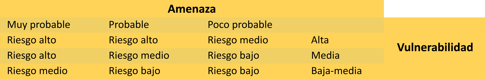

1. Alistamiento de recursos
Un tipo de derrame de un plaguicida puede suceder en cualquier momento, solo cabe resaltar que, para cualquier emergencia de este tipo, se debe estar preparado.
Estos derrames casi siempre son peligrosos para la salud humana y se deben evitar a toda costa. Si llega a ser el caso de que esto ocurra, se deberá resolver inmediatamente, limpiando el área donde fue contaminado por el plaguicida.
En caso de que el derrame esté en el suelo se deberá utilizar utensilios absorbentes y luego recogerlos con cepillo y una pala recogedora.
Después de haber recogido el derrame, lave la ropa contaminada y posteriormente tome una ducha con bastante agua y jabón.
A tener en cuenta

Se deben limpiar los derrames inmediatamente después de ocurridos.
Siempre se deben tener en cuenta las instrucciones de la ficha técnica del plaguicida.
Después de ocurrido el derrame, se debe mantener a personas, animales y vehículos alejados de la zona contaminada por el incidente.
En el caso que sea un plaguicida líquido derramado, se deberá utilizar materiales absorbentes como arena seca, aserrín y posteriormente recogerlos con cepillo y una pala recogedora.
Nunca utilice agua para limpiar la zona.
En caso de que sea un plaguicida en polvo seco o de gránulos, se deberá limpiar con un cepillo y una pala y eliminarlos en forma segura y apropiada.
Tenga siempre a la mano arena, aserrín o tierra negra.
1.1 - Ubicación de kits antiderrames, gabinetes antiderrames.
Al utilizar sustancias químicas provenientes de los plaguicidas, hace que preexista el riesgo de que ocurra, de una manera accidental un vertimiento ocasionado por una caída, una mala manipulación o transporte de estos.
Estas situaciones imprevistas implican un riesgo para la salud de las personas y una contaminación para el medio ambiente.
Por este motivo, es de importancia:
Conocer la ubicación del kit antiderrame.
Conocer los pasos a seguir en una situación similar, para un actuar preciso.
Ubicación de los kits para el control de derrames
El contenido de los kits contempla elementos necesarios para iniciar un primer control al derrame, que, dependiendo de su tamaño, será totalmente controlado o requerirá la ayuda de otro kit.
Es de importancia tener presente que los kits están bajo la responsabilidad de cada área.
Contenido del kit para el control de derrames
Elementos de protección personal básicos:
Guantes de nitrilo: estos evitan el contacto directo de la piel con la sustancia.
Gafas de policarbonato: estas gafas evitan el contacto de los ojos por las salpicaduras o gases de los plaguicidas.
Calzado especial: es utilizado para evitar el contacto directo de los plaguicidas con la piel.
Material absorbente:
Tierra inerte: este material es absorbente, no presenta algún tipo de combustión. Material que absorbe rápidamente, evitando la propagación del derrame.
Material de limpieza:
Pala recogedora y escoba: estas herramientas deben ser para la limpieza de la tierra inerte cuando ha sido impregnada con el derrame del plaguicida.
Paño absorbente: es necesario para la limpieza de las superficies involucradas en el derrame.
Contenido del kit para el control de derrames
Estos gabinetes deben ser herramientas útiles y resistentes que no sean afectadas por algún tipo de derrame de algún plaguicida.
Se debe utilizar material de estibar como por ejemplo tablones y ladrillos; para no colocar los recipientes de los plaguicidas directamente sobre el suelo.
En caso de que la corrosión ocasionada por un derrame de plaguicidas se observe de una manera tempestiva, se debe tomar las medidas apropiadas para la limpieza de ese derrame.
1.2 - Protocolo de emergencia
Los pasos por seguir en una emergencia serán:
Evaluación del derrame: determinar qué fue lo que sucedió, qué tipo de plaguicida y qué cantidad se filtró. En estos casos siempre se deben utilizar los elementos de protección personal.
Siempre tenga presente la necesidad de despejar el sitio para que otras personas no corran riesgo de afectarse
Control del derrame: para esto se debe detener el derrame desde la fuente, para contrarrestar la contaminación. Si un producto en presentación líquida se ha volcado, levante el envase. O si este se ha roto proceda a la contención, utilizando los elementos y barreras absorbentes.
Las barreras absorbentes son cordones hechos con telas porosas y absorbentes rellenas con absorbente mineral. Se deberá colocar bordeando el derrame para así evitar que el líquido se extienda más.
Se deberá colocar en el interior del círculo formado por la barrera, paños o almohadillas para empezar a absorber el líquido.
Limpiar la zona contaminada: para derrame sólidos, se deberán recolectar de nuevo en bolsas de color rojo de material de polietileno, utilizando todos los equipos de protección personal y se procederá a rotular.
Se deberá lavar la zona contaminada con agua.
Los residuos después de un derrame deberán ser eliminados, entregándolos a empresas idóneas para su correspondiente eliminación.
Descontaminación de los equipos y personal: se deberá disponer de una zona de descontaminación tanto para el personal afectado como para los diferentes implementos utilizados en la contención del derrame
Se deberá lavar los equipos y ropa utilizada.
2. Hojas de seguridad o tarjetas de emergencia
Son documentos que permiten entender los peligros en transporte, almacenamiento y uso de los plaguicidas tanto para el ser humano como para los ecosistemas. También nos informa acerca de las precauciones a tener en cuenta y las medidas pertinentes en caso de una emergencia.
Esta hoja de seguridad se le conoce como MSDS (Hoja de datos de seguridad de materiales); la MSDS es muy diferente a una ficha técnica, ya que esta tiene una mayor información referente a las especificaciones exactas e instrucciones para el buen uso del producto.
¿Quién fabrica la MSDS?
Estas hojas de seguridad la emiten los fabricantes, hacia los centros de información, como CISTEMA, los cuales existen en diferentes países y en los cuales se acopia la información. Estos centros tienen la viabilidad de prestar su servicio en caso de emergencia.
2.1 - Reconocimiento de la hoja de seguridad: secciones, información, disposición
Una hoja de seguridad tendrá las siguientes secciones, con sus respectivos contenidos:
Sección uno. Producto e identificación de la compañía
Es el nombre del material que corresponde con el rotulado del producto y documentos de embarque y la dirección y número telefónico de la empresa que ha fabricado el producto.
Esta sección indica el número de teléfono de centro de formación que apoya al fabricante en la parte de oferta y divulgación de las hojas de seguridad y en los casos de emergencia.
| Compañía | XYZ |
| Dirección de la compañía | Hometown, USA 12345. |
| Teléfono de la compañía | (800) 123-1234 |
| Emergencia médica | (800) 234-1234 |
| Emergencia química | (800) 894-5612 |
| Nombre del producto | XYZ |
| Código del producto | 68907 |
| Fecha de publicación | 2/1/2013 |
| Fecha de reemplazo | 2/1/2014 |
Sección dos. Identificación de peligros
Esta sección describe la apariencia del material, como también su estado físico y los peligros para la salud, también los peligros físicos y ambientales que requerirán una atención inmediata en algún caso de emergencia, tales como: peligro de fuego, alguna explosión, o las posibles consecuencias al tener contacto directo con el producto, vías de ingreso del producto al ser humano, y órganos que se verían afectados por la alta exposición con efectos inmediatos severos y los posibles efectos posteriores.
La identificación de los peligros debe dar a conocer información general y de un fácil entender acerca de los efectos que puede ocasionar a la salud y los síntomas derivados con la exposición al plaguicida.
Esta sección también nos indica los efectos para el medio ambiente.
| Advertencia | |
| Inflamable | _______________ |
| Causa una irritación grave en los ojos y el tracto respiratorio | |
| Altamente tóxico para los peces | |
| Vías problables de esposición: los ojos, la piel e inhalación | |
| Órganos objeto: hígado y riñon | |
Sección tres. Composición, información sobre ingredientes
Esta sección hace referencia a los componentes peligrosos del plaguicida, también se incluye la composición porcentual de las mezclas, los nombres científicos o comunes. El fabricante podrá o no publicar algunos ingredientes porque son secretos comerciales.
| Composición sobre los componentes | ||
| Componente A | 123-45-6 | 60-90 |
| Componente B | Secreto comercial | may-15 |
| Componente C | Ninguna | Secreto comercial |
| Componente D | 987-65-4 | 0.1 |
Sección cuatro. Medidas de primeros auxilios
Son las medidas para estabilizar al afectado ante una inhalación del plaguicida, absorción, ingestión o contacto del producto, hasta que el afectado tenga una atención profesional. Estas instrucciones deben ser relacionadas y coherentes con los efectos de la sección número dos.
También en esta sección se incluirá antídotos conocidos y notas para los médicos donde se expliquen tratamientos específicos o diagnósticos ideales y por último las contradicciones o preexistencias dependiendo el procedimiento usado.
| Organo afectado | Medidas de primeros auxilios |
| Contacto con los ojos. | Lavar los ojos inmediatamente con agua durante un tiempo mínimo de 15 minutos. |
| Contacto con la piel. | Retirar la ropa contaminada y lavarla. Lavar la piel con jabón y bastante agua. |
| Inhalación. | Trasladarse al aire fresco. |
| Ingestión. | No inducir al vomito. |
| Nota para los medicos. | Este producto no es un inhibidor de la colinesterasa. |
Sección cinco. Medidas en caso de incendio
Esta sección informa sobre la posibilidad de que la sustancia pueda ocasionar un incendio y en qué circunstancias. Detalla sobre la temperatura en que el plaguicida puede ser inflamable, también nos menciona sobre las posibles causas de que explote y de cómo apagar un incendio por causa de este plaguicida.
Esta sección también indica sobre alguna condición o exposición en que no puede extinguir el incendio. También viene incluido el comportamiento de la sustancia cuando en el entorno existen las condiciones y materiales para potencializar los peligros ante un incendio.
Por último, se deberá incluir los elementos de protección personal para los bomberos.
| Medidas en caso de incendio | |
| Medio adecuado de extinción. | CO2 |
| Medios no adecuados de no extinción. | Espuma de alcohol. |
| Productos de combustión. | Oxidos de carbono, nitrogeno y azufre. |
| Protección para los bomberos. | Se recomienda que los bomberos utilicen aparatos de respiración autonomos y equipo completo de cambio contra incendios. |
Sección seis. Medidas en caso de vertido accidental
Esta sección plantea los procedimientos de limpieza y absorción de derrames, goteos o escapes de los plaguicidas. También se incluyen las advertencias sobre la dirección del viento.
Aborda además los equipos para contener los derrames, posibilidad de que estos derrames contaminen el medio ambiente y las instrucciones para aislar y descontaminar el área afectada.
| Medidas en caso de vertido accidental | |
| Precausiones ambientales. | Este material es contaminante del agua. No permita que el material derramado ingrese a las corrientes de agua. |
| Metodos de contención. | Absorber el liquido derramado en un material adecuado. |
| Metodos de limpieza. | Utilice herramientas a prueba de chispas para barrer o frotar y contenga en un recipiente. |
| Información adicional. | Los derrames de este material no necesitan reportarse al centro de respuesta nacional. |
Sección siete. Manejo y almacenamiento
Esta sección se refiere al almacenamiento en condiciones seguras. Esto incluirá todas las reglamentaciones sobre manejo, higiene y precauciones generales.
También se debe tener en cuenta en la utilización de herramientas que no produzcan chispas, que los equipos sean a prueba de explosión y que se adviertan sobre la utilización de polos a tierra para los materiales inflamables.
En las condiciones de almacenamiento se deben utilizar atmósferas inertes y evitar el deterioro de los productos y sus contenedores.
Sección ocho. Controles de exposición y protección personal
En esta sección van identificadas las guías de exposición del producto y de sus componentes, los límites de exposición permisibles tanto de los componentes como de las mezclas (TLV, STEEL, IDHL, PEL) y de sus unidades de medidas correspondientes (ppm, mg/metro cúbico).
En esta sección se incluyen los controles de ingeniería, tales como la ventilación. Los elementos de protección personal a utilizar se utilizarán dependiendo del uso normal del producto. De todas maneras, se debe tener presente en la prevención del contacto o inhalación directa del plaguicida.
| Guia de exposición | |
| Componente A. | Sin establecer. |
| Componente B. | TWA: 100ppm |
| Componente C. | TWA: 50ppm (limite sugerido por el fabricante) |
| Componente D. | STEL: 250ppm |
| Controles de ingenieria. | Suministra ventilación local de escape. |
| Protección facial. | Utilizar gafas y caretas. |
| Protección dermica. | Utilizar ropa resistente. como guantes, delantal, botas o traje completo. |
Sección nueve. Propiedades físicas y químicas
Esta sección indica sobre las propiedades del material, tales como:
Apariencia (aspecto, color y forma).
Olor y umbral del olor.
PH.
Punto de congelación y punto de fusión.
Inflamabilidad.
Límites de explosividad.
Densidad del vapor.
Gravedad específica o densidad relativa.
Temperatura de descomposición.
La interpretación de cada una de las propiedades aportará información para prevenir y facilitar en algún caso de emergencia.
| Propiedad | Referencia |
| Color. | Sin color. |
| Olor. | Dulce. |
| Estado fisico. | Liquido. |
| PH. | No se aplica. |
| Punto de congelación. | Menor a los -25 grados F. |
| Punto de ebullición. | 165 grados F. |
| Punto de inflamación. | 60 grados F. |
| Gravedad especifica. | 0.9 a 60 grados F. |
| Inflamabilidad. | No se aplica. |
Sección diez. Estabilidad y reactividad
Esta sección explica si el plaguicida es estable o no en condiciones normales de temperatura y presión (21 grados Centígrados y 760 mmHg). Además, qué condiciones se deben evitar:
Calor.
Presión - luz.
Humedad.
Materiales incompatibles, que pueden ocasionar situaciones peligrosas.
Productos de descomposición peligrosos, que provienen de un calentamiento o reacción química con otro material.
Esta sección es de vital importancia, ya que se eliminan riesgos al momento de almacenar.
Sección once. Información toxicológica
Esta sección explica los efectos a corto o largo plazo si el plaguicida o alguno de sus componentes ingresa al organismo. Relaciona los estudios acerca de los efectos en casos reales que se han visto en humanos, en animales, en algunas pruebas de laboratorio.
Algunos efectos que se describen en esta sección son:
Irritación.
Sensibilización en piel y vías respiratorias.
Efectos por dosis agudas (DL50-CL50).
Corrosividad.
Efectos neurológicos.
Efectos reproductivos.
Efectos de desarrollo.
Efectos sobre órganos blanco.
| Efectos agudos | |
| Item. | Descripción. |
| LD50 Oral. | Menor a 5000 mg/kg (ratas). |
| LD50 dermico. | Menor a 2000 mg/kg (conejos). |
| Inhalación. | En los seres humanos, la irritación se produce a 200 ppm. |
| Irritación ocular. | Puntaje de irritación primario 80/110. |
| Irritación en la piel. | Puntaje de irritación primario 4.8/8. |
Sección doce. Información ecológica
Esta sección dispone los efectos tóxicos en organismos acuáticos y terrestres. También se podrán incluir estudios anteriores que tengan información y con ellos tomar una relación con el nuevo plaguicida.
Algunos datos puntuales que en esta sección expone son:
Ecotoxicidad aguda y crónica en plantas acuáticas o terrestres.
Ecotoxicidad aguda y crónica en animales o microorganismos, persistentes en el ambiente.
Degradabilidad biológica o química.
Bioacumulación (factor de bioconcentración y coeficiente de partición octanol/agua).
Movilidad en el medio ambiente.
| Información ecologica | |
| Item. | Descripción. |
| Ecotoxicidad. | Muy toxico para los peces. |
| Persistencia/degradación. | Se espera la degradación bajo condiciones aerobicas y anaerobicas. |
| Movilidad en el ambiente. | Se espera volatilización apreciable desde el agua hacia el aire. |
Sección trece. Consideraciones de disposición
En esta sección indica que cada país, ciudad deberá tener una normatividad referente al manejo adecuado del medio ambiente.
También presenta la información para realizar una disposición segura y que sea aceptable para el medio ambiente desde la normatividad del CERCLA (ley de compensación y recuperación ambiental) y la RCRA (ley de conservación).
Sección catorce. Información sobre transporte
Esta sección describe cómo debe rotularse y empacar el producto. También informa sobre el número de identificación otorgado por la Organización de las Naciones Unidas y cómo será la vía de transporte permitido de este producto según la reglamentación que lo rige.
Sección quince. Información reglamentaria
En esta sección dispone toda la reglamentación que deberá cumplir en salud, seguridad y el ambiente, tanto en el país de origen del producto como en el país donde se utilizará.
También vendrán incluidas todas las normas aplicadas en el etiquetado de contenedores y que se debe acompañar al momento de ser despachado.
Sección dieciséis. Información adicional
En esta sección va incluida la información sobre el producto que podría ser útil. Aspectos tales como: texto de etiquetas y la preparación y revisión de la información.
2.2 - Uso de una hoja de seguridad
Se utiliza para consultar sobre lo peligroso de los plaguicidas que se manipulan. Estas hojas de seguridad son muy útiles para el personal de alguna brigada cuando se presenta alguna emergencia por este tipo de químicos.
Los directivos toman medidas de prevención y control con base en los datos que aparecen en la MSDS.
En el mundo existen varios centros de información similares a CISTEMA, los cuales almacenan las MSDS y las remiten a sus usuarios. Esto equivale a que los fabricantes de plaguicidas confían, al centro de su mayor confianza, la divulgación de esta información que no será confidencial, pero sí muy bien interpretada.
3. Protocolo de emergencias
Ante un derrame de plaguicidas químicos se deberá dar respuesta prontamente tratando de minimizar la posibilidad de que estos accidentes ocurran. continuación e describe el protocolo que debe llevarse a cabo para enfrentar una emergencia con plaguicidas para afrontarlos de una manera oportuna, adecuada y efectiva.
El protocolo debe contemplarse desde la fase inicial de generación del derrame hasta la disposición final del residuo.
Estos derrames pueden afectar considerablemente las operaciones y daños en el lugar del incidente, muchos derrames pueden prevenirse, una buena implementación y desarrollo de buenas prácticas reducirán significativamente la posibilidad de un derrame, se debe entender que no se debe subestimar ningún tipo de derrame.
Para el protocolo se deberá tener en cuenta:
Derrame simple
No se esparce rápidamente.
No es peligroso excepto si por contacto directo.
Involucra un solo envase de una capacidad menor de 200 litros.
Asegurar el área
Consultar la hoja de seguridad del producto
Identificación del producto.
Composición del producto.
Datos de riesgo para la salud.
Primeros auxilios.
Procedimiento en caso de incendios.
Medidas para fugas.
Almacenaje y manipulación del producto.
Equipos de protección personal a utilizar.
Propiedades físicas y químicas del producto.
Estabilidad y reactividad del producto.
Se necesitará controlar el derrame evitando el esparcimiento. El personal especializado encargado del protocolo deberá tener capacitación previa y contar con todos los elementos de protección personal en estado idóneo.
La emergencia deberá ser evaluada rápidamente, velando de que nadie tenga contacto directo con el área afectada, se debe notificar en el menor tiempo posible del incidente, y por último se limpiará la zona contaminada quitando todos los materiales con que se detuvo el incidente.
3.1 - Notificación
Ante cualquier riesgo de derrame de algún plaguicida, se debe notificar lo más pronto posible ante los entes superiores y especializados del control y manejo de este incidente.
En el proceso de notificación se deberá:
Entregar toda la información al supervisor, para que este proceda en el control de la emergencia.
El supervisor incluirá en el proceso los equipos idóneos, materiales para tratar el incidente y ubicación de las áreas afectadas.
Buscar toda la información necesaria y recurrir a una asesoría si llega a suceder el caso.
Se deberá asegurar el área.
Se debe alertar a las personas de la zona sobre el derrame y que ellos no se acerquen.
Delimitar el área con barreras, rodeando toda el área contaminada.
Rodear el área afectada con materiales que absorban y controlen el derrame.
Ubicar algún elemento para extinción de algún tipo de incendio.
3.2 - Determinación de la fuente de derrame y señalización del área afectada
Para determinar la fuente del derrame, se debe tener claridad en qué estado está ese incidente (sólido, líquido y gaseoso).
Para la determinación de la fuente de derrame se debe tener en cuenta:
Evaluación del área afectada.
Se debe localizar el origen del derrame o de la fuga.
Se debe buscar rápidamente la etiqueta de la sustancia, para identificar el contenido y los posibles riesgos.
Se deben identificar los posibles riesgos en el trayecto del derrame, como por ejemplo los diferentes materiales en el entorno y trabajadores.
Se deberá tener una libreta para tomar apuntes de lo ocurrido, para sí es el caso de comunicarlo al mando superior.
Algunos factores importantes al momento de señalizar el área son:
Correr la voz rápidamente a las personas cercanas al lugar sobre el derrame para que no se acerquen.
Se debe ventilar el área.
Se deberá acordonar con barreras, rodeando toda el área afectada.
Rodear con materiales absorbentes el área del derrame.
Se debe apagar cualquier tipo de fuente de ignición.
Se debe disponer de algún tipo para extinguir un incendio.
Después de que se ha señalizado el área del derrame, se procederá a su limpieza; en la cual consistirá:
Si llega el caso, se deberá intentar recuperar el producto.
Se deberá absorber o neutralizar por completo el derrame.
Se deberá lavar el área contaminada con bastante agua, si es el caso que no exista contraindicación.
Se deben señalizar todos los recipientes donde se van a depositar los residuos.
3.3 - Evaluación de daños, tipo de derrame y riesgos
La evaluación de daños implica determinar los efectos o los potenciales impactos en la salud pública, propiedades involucradas y al medio ambiente. Su potencial de impacto real dependerá del sitio donde está el incidente, en el tiempo y de las condiciones específicas del sitio.
Para una buena y completa evaluación de los efectos de una emergencia por plaguicidas químicos, se deberán conocer e identificar las sustancias que lo componen, también se deberá establecer los patrones de dispersión y por último las cantidades de las concentraciones de los productos tóxicos.
El riesgo se evaluará en referencia a la exposición del público en el incidente y otros receptores críticos.
Tipo de derrame
Hay dos tipos de derrames, los cuales son:
Derrame líquido:
Este tipo de derrame se controlará de la siguiente manera:
Se debe esparcir la arena o la vermiculita, (los cuales son los mejores materiales absorbentes) sobre el área del derrame, en dirección de afuera hacia el centro.
Se debe esperar unos minutos para que el derrame sea completamente absorbido.
Se debe recoger el material contaminado utilizando la pala y escoba del kit de derrames.
Se debe etiquetar la bolsa con la correspondiente identificación del residuo peligroso.
Se deben limpiar los materiales utilizados para el control del derrame.
Derrame sólido:
Este tipo de derrame se controlará de la siguiente manera:
Se debe recoger el material derramado con la pala y escoba del kit de derrames, y posteriormente disponerlo en una bolsa plástica.
Se debe limpiar la superficie afectada con paños absorbentes, agua y jabón.
Se deben limpiar los materiales utilizados para el control del derrame.
Evaluación del riesgo
El riesgo debe ser definido como la probabilidad de que ocurra consecuencias económicas, sociales o ambientales en un sitio y durante un rango de tiempo de exposición determinado. Esta evaluación de riesgo se obtendrá de una relación entre la amenaza con la vulnerabilidad de los elementos que están expuestos.
Escenarios de riesgo
Son la descripción de un futuro muy posible y del camino asociado al futuro. Este escenario es la interacción entre los factores de riesgo (amenaza y vulnerabilidad) dependiendo en qué territorio estén y en qué momento se den. Esto indicará la identificación del tipo de daño y las pérdidas que se podrán generar en un caso de que se presente un evento peligroso en unas condiciones de vulnerabilidad.
Matriz de priorización de riesgos
Glosario
Carcinógeno:es la sustancia que es capaz de aumentar la incidencia de tumores malignos en animales o humanos expuestos.
Concentración Letal (Lethal Concentración) LC50:es la concentración calculada de un material en el aire que se espera que extermine el 50% de un grupo de animales de ensayo con una sola exposición (normalmente de 1 h a 4 h). La LC50 se expresa en partes del material por millón de partes de aire, en volumen (ppm) para gases y vapores, como miligramos de material por litro de aire (mg/l) para polvo y nieblas, al igual que para gases y vapores.
Concentración letal baja (Lethal concentration Low):es la menor concentración de una sustancia en el aire, diferente de LC50, que se ha reportado que ha causado la muerte en humanos o animales.
Dosis letal LD50:es una sola dosis calculada de un material que se espera que extermine el 50% de un grupo de animales de ensayo. La dosis de LD50 se expresa normalmente como miligramos o gramos de material por kilogramo de peso del animal (mg/kg o g/Kg).
Hoja de seguridad para materiales (MSDS):por sus siglas en inglés (Material Safety Data Sheet): es el material escrito o impreso concerniente a los peligros químicos, que se prepara de acuerdo con las reglamentaciones.
Límite explosivo más bajo o límite inflamable de un vapor o gas (Lower explosive Limit, o Lower flammable Limit) LEL o LFL:es la menor concentración (menor porcentaje de una sustancia en el aire) que producirá el destello del fuego en presencia de una fuente de encendido.
Límite de exposición permisible (permissible exposure limit) PEL:es el límite de exposición ocupacional establecido bajo la autoridad reglamentaria de OSHA. Puede ser una condensación promedio ponderada en el tiempo, o una concentración máxima que nunca se debe exceder, ya sea instantánea o durante un periodo de 15 minutos.
Nivel de efectos no observados (No observed effect level) NOEL:es la menor dosis de una sustancia usada en un ensayo, que no produce efectos adversos.
Nivel efectivo más bajo (lowest effect level) LEL:es la menor dosis usada en un ensayo, que produce efectos tóxicos.
OSHA (occupational safety and healt administration, U.S Deparment of labor):es la reglamentación de las condiciones en el sitio de trabajo.
Material complementario
| Nombre del documento o material | Tipo de material | Enlace del recurso |
|---|---|---|
| Instituto Colombiano de normas Técnicas y Certificación ICONTEC. (1998). Norma Técnica Colombiana 4532. Transporte de mercancías peligrosas. Tarjetas de emergencia para transporte de materiales. Elaboración. | Ver | |
| Asociación Chilena de Seguridad ACHS. Trabajadores y Plaguicidas seguros. | Ver |
Referencias bibliográficas
Instituto Colombiano de normas Técnicas y Certificación ICONTEC. (1998). Norma Técnica Colombiana 4532. Transporte de mercancías peligrosas. Tarjetas de emergencia para transporte de materiales. Elaboración.